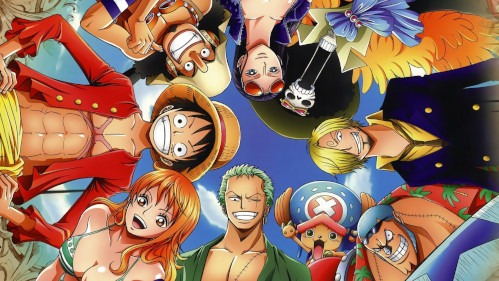

One piece
One Piece es una aventura de piratas. Es la historia de un chico llamado Monkey D. Luffy (Luffy Monkey D. en español, dada la onomástica japonesa de poner antes el apellido que el nombre) quien, cuando tenía 7 años, comió accidentalmente una Fruta del Diablo, convirtiéndose en un hombre de goma aunque al precio de hacerle incapaz de nadar.